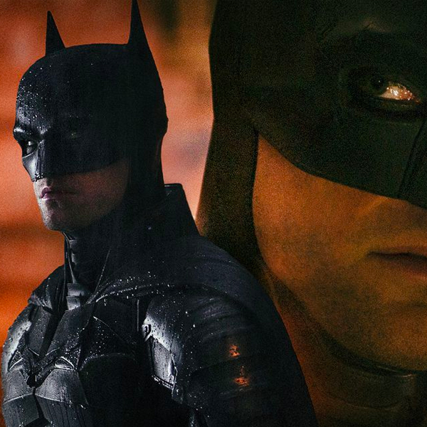
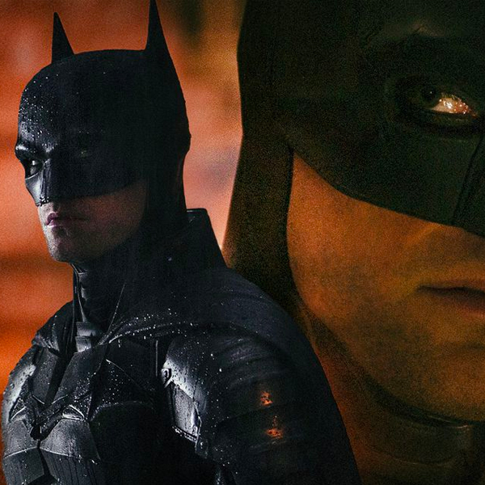

STORY
優しくもミステリアスな青年ブルース・ウェイン。彼は世界的名探偵として名を馳せると同時に、殺害された両親の復讐を誓い、2年前からバットマンとして人知れず悪と戦っていました。
そんなある日、ゴッサムシティで権力者の連続殺人事件が発生します。リドラーと名乗る犯人は、必ず現場に“なぞなぞ”を残していました。警察やブルースを挑発するため、最強の知能犯リドラーが最後に残したメッセージは「次の犠牲者はバットマン」。
社会や人間が隠してきた嘘を暴き、人々を恐怖に陥れるリドラーの脅威を前に、ブルースの良心は狂気へと変わっていきます。 はたしてリドラーの目的とは――？
 
